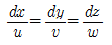
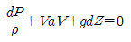
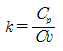
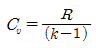
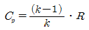
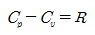
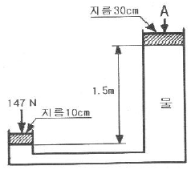
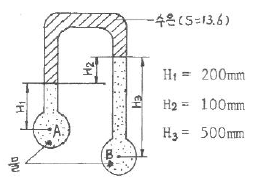

소방설비산업기사(기계) (2008-05-11 기출문제)
1과목: 소방원론
1. 다음 중 증기압의 단위가 아닌 것은?
- mmHg
- kPa
- N/cm2
- cal/℃
(정답률: 87%)

2. 화재로 인하여 산소가 부족한 건물 내에 산소가 새로 유입된 대에는 고열가스의 폭발 또는 급속한 연소가 발생하는데 이 현상을 무엇이라고 하는가?
- 후래쉬 오버(Flash over)
- 보일 오버(Boil over)
- 백 드래프트(Back draft)
- 백 화이어(Back fire)
(정답률: 73%)
3. 제3종 분말소화약제의 주성분은?
- 탄산수소나트륨
- 제1인산암모늄
- 탄산수소칼륨
- 탄산수소칼륨과 요소
(정답률: 86%)
4. 자연발화를 방지하는 방법으로 틀린 것은?
- 습도가 높은 곳을 피한다.
- 저장실의 온도를 높인다.
- 통풍을 잘 시킨다.
- 열이 쌓이지 않게 퇴적방법에 주의한다.
(정답률: 45%)
5. 화재시 발생할 수 있는 유해한 가스로 혈액 중의 산소 운반 물질인 헤모글로빈과 결합하여 헤모글로빈에 의한 산소 운반을 방해하는 작용을 하는 것은?
- CO
- CO2
- H2
- H2O
(정답률: 86%)
6. 다음 중 유도등의 종류가 아닌 것은?
- 객석유도등
- 무대유도등
- 피난구유도등
- 통로유도등
(정답률: 37%)
7. 건축물으 주요 구조부에 해당하는 것은?
- 작은 보
- 옥외 계단
- 지붕틀
- 최하층 바닥
(정답률: 76%)
8. 위험물안전관리법상 제1류 위험물의 성질을 옳게 나타낸 것은?
- 가연성 고체
- 산화성 고체
- 인화성 액체
- 자연발화성 물질
(정답률: 81%)
9. 질소가 가연물이 될 수 없는 이유를 가장 옳게 설명한 것은?
- 흡열 반응을 하기 때문에
- 연소시 화염이 없기 때문에
- 산소와 반응성이 대단히 적기 때문에
- 발열 반응을 하기 때문에
(정답률: 75%)
10. 고체의 일반적인 연소 형태에 해당하지 않는 것은?
- 표면연소
- 분해연소
- 증발연소
- 확산연소
(정답률: 60%)
11. 다음 중 자체에 산소를 포함하고 있어서 자기연소가 가능한 물질은?
- 니트로글리세린
- 금속칼륨
- 금속나트륨
- 황린
(정답률: 68%)
12. 연소범위에 대한 다음 설명 중 틀린 것은?
- 연소범위에는 상한값과 하한값이 있다.
- 온도가 올라가면 연소범위는 넓어진다.
- 연소범위가 좁을수록 폭발의 위험이 크다.
- 연소범위는 압력의 영향을 받는다.
(정답률: 47%)
13. 가연물질의 조건으로 옳지 않은 것은?
- 산화되기 쉬워야 한다.
- 연소반응을 일으키는 활성화에너지가 커야 한다.
- 열의 축적이 용이하여야 한다.
- 산소와의 친화력이 커야 한다.
(정답률: 74%)
14. 칼륨과 같은 금속분말 화재시 주수소화가 부적당한 가장 큰 이유는?
- 수소가 발생되기 때문
- 유독가스가 발생되기 때문
- 산소가 발생되기 때문
- 금속이 부식되기 때문
(정답률: 75%)
15. CO2 소화기가 갖는 주된 소화 효과는?
- 냉각소화
- 질식소화
- 연료제거소화
- 연쇄반응차단소화
(정답률: 80%)
16. 다음 중 소화의 원리에서 소화형태로 볼 수 없는 것은?
- 발열소화
- 질식소화
- 희석소화
- 제거소화
(정답률: 70%)
17. 정전기 화재사고의 예방대책으로 옳지 않은 것은?
- 제전기를 설치한다.
- 공기를 되도록 건조하게 유지시킨다.
- 접지를 한다.
- 공기를 이온화한다.
(정답률: 50%)
18. 제3류 위험물인 나트륨 화재시의 소화방법으로 가장 적합한 것은?
- 이산화탄소 소화약제를 분사한다.
- 건조사를 뿌린다.
- 하론 1301을 분사한다.
- 물을 뿌린다.
(정답률: 31%)
19. 다음 중 연소의 3요소라고 할 수 있는 것은?
- 공기, 연료, 바람
- 연료, 산소, 열
- 마찰, 수분, 열
- 열, 산소, 공기
(정답률: 65%)
20. 화재의 분류에서 다음 중 A급 화재에 속하는 것은?
- 유류
- 목재
- 전기
- 가스
(정답률: 83%)
2과목: 소방유체역학
21. 내경 20cm인 배관에 매분 5.4m3의 물이 흐르고 있을 때 유속은 약 몇 m/s 인가?
- 2.08
- 2.86
- 3.52
- 5.⑤
(정답률: 67%)
22. 안지름 10cm인 곧고 긴 수평 파이프 내를 평균유속 5m/s로 물이 흐르고 있다. 길이 10m 사이에서 나타나는 손실 수두는 약 몇 m인가? (단, 관마찰계수는 0.013이다.)
- 0.17
- 1.66
- 1.8
- 1.89
(정답률: 56%)
23. 일차원 유동에서의 연속방정식(Continuity Equation)에 해당하는 것은?
- PV=nRT
- ρ1A1V1=ρ2A2V2


(정답률: 69%)
24. 다음 중 이상유체의 정의를 옳게 설명한 것은?
- 압축을 가하면 체적이 수축하고 압력을 제거하면 처음 체적으로 되돌아가는 유체
- 유체유동시 마찰 전단응력이 발생하지 않으며 압력변화에 따른 체적변화가 없는 유체
- 뉴턴의 점성법칙을 만족하는 유체
- 오염되지 않은 순수한 유체
(정답률: 48%)
25. 유량계수가 0.94인 방수노즐로부터 방수압력(계기압력) 255kPa로 물을 방사할 때 방수량을 측정하였더니 매분 0.1m3이었다면 사용한 노즐의구경은 약 몇 mm 인가?
- 10
- 12
- 14
- 16
(정답률: 25%)
26. 밴튜리 미터에 물이 흐르고 있다. 입구(직경 10cm)와 목부분(직경 4cm)에 수은이 채워진 U 자관으로 특정하니 수은주의 높이 차이가 8cm 이었다. 유량계수가 0.65 일 때 유량은 몇 m3/s 인가?
- 0.00077
- 0.00093
- 0.00127
- 0.00367
(정답률: 11%)
27. 이상기체의 정압비열(Cp), 정적비열(Cv), 비열비(k), 기체상수(R)의 관계 중 틀린 표현은?




(정답률: 56%)
28. 다음 분말 소화약제의 주성분 중에서 A, B, C급 화재 모두에 적응성이 있는 것은?
- KHCO3
- NaHCO3
- Al2(SO4)3
- NH4H2PO4
(정답률: 75%)
29. 소화약제의 특성에 관한 설명 중 옳은 것은?
- 분말 소화약제는 입도가 클수록 소화효과가 증대된다.
- 베1종 분말 소화약제는 백색으로 착색되어 있다.
- 이산화탄소의 3중점은 31℃ 이다.
- 하론 소화약제 중 하론 2402가 가장 독성이 약하다.
(정답률: 66%)
30. 그림과 같은 작동 유체가 물인 수압기에서 정적 평형을 이루고자 할 때 A 부분에 다해야 하는 하중의 크기는 약 몇 N 인가?

- 284
- 314
- 362
- 1323
(정답률: 33%)
31. 그림에서 A점의 압력 PA와 압력 PB와의 압력차 (PA-PB)는 약 몇 kPa인가?

- 9.4
- 10.4
- 11.4
- 12.4
(정답률: 58%)
32. 동점성계수가 6×10-5m2/s 인 유체가 0.4m3/s의 유량으로 원관에 흐르고 있다. 하임계 레이놀즈수가 2100일 때 층류로 흐를 수 있는 관의 최소 지름은 몇 m 인가?
- 1.01
- 2.02
- 4.⑤
- 6.06
(정답률: 60%)
33. 다음 중 오존츤 파괴 효과가 없는(ODP=0) 소화약제는?
- Halon 1301
- HFC-227ea
- HCFC BLEND A
- Halon 1211
(정답률: 37%)
34. 펌프의 흡입 이론에서 볼 때 대기압이 100kPa인 곳에서 펌프의 흡입 배관으로 물을 흡수할 수 있는 이론 최대 높이는 약 몇 m인가?
- 5
- 10
- 14
- 98
(정답률: 42%)
35. 관속을 물이 유속 10m/s로 유동한다. 관경의 변호로 유속이 5m/s로 변화되었다면 압력 수두는? (단, 유동 마찰손실은 무시하고 위치에너지는 동일한 것으로 한다.)
- 약 3.82m 증가
- 약 3.44m 증가
- 약 2.78m 증가
- 약 2.38m 증가
(정답률: 18%)
36. 어떤 이상기체가 체적 V1, 압력 P1으로부터 체적 V2, 압력 P2가지 등온팽창하였다. 이 과정 중에 일어난 내부 에너지의 변화량 ⊿U=U2-U1과 엔탈피의 변화량 ⊿H=H2-H1을 맞게 나타낸 관계식은?
- ⊿U>0, ⊿H<0
- ⊿U<0, ⊿H>0
- ⊿U>0, ⊿H>0
- ⊿U=0, ⊿H=0
(정답률: 48%)
37. 청정 소화약제 저장 용기의 설치 장소에 대한 설명으로 틀린 것은?
- 온도가 70℃ 이하이고 온도변화가 작은 곳에 설치할 것
- 직사광선 및 빗물 침투 우려가 없는 곳에 설치할 것
- 방화문으로 구획된 실에 설치 할 것
- 방호구역외의 장소에 설치할 것
(정답률: 49%)
38. 다음 중 등엔트로피 과정은?
- 가역압축 과정
- 가역등온 과정
- 가역등온압축 과정
- 가역단열 과정
(정답률: 36%)
39. 계기압력이 1.2MPa이고 대기압이 96kPa일 때 절대압력은 몇 kPa 인가?
- 1104
- 1200
- 1296
- 108
(정답률: 52%)
40. 캐비테이션(공동 현상)의 발생 원인과 관계가 먼 것은?
- 펌프의 설치위치가 물 탱크보다 높을 때
- 관내의 유체가 고온일 때
- 펌프의 임펠러 속도가 클 때
- 펌프의 흡입측 수두가 작을 때
(정답률: 36%)
3과목: 소방관계법규
41. 다음 중 화재 또는 구조ㆍ구급이 필요한 상황을 허위로 알린 자에게 부과하는 과태료액의 기준으로 알맞은 것은?
- 50만원
- 100만원
- 150만원
- 200만원
(정답률: 21%)
42. 다음 중 피난층에 대한 설명으로 가장 알맞은 것은?
- 건축물의 1층
- 건축물의 옥상
- 옥상으로 직접 피난할 수 있는 층
- 곧바로 지상으로 갈 수 있는 출입구가 있는 층
(정답률: 72%)
43. 자동호재탐지설비를 설치하여야 하는 건축물의 기준으로 옳지 않은 것은?
- 연면적 600m2 이상인 숙박시설
- 연면적 1000m2 이상인 공동주택
- 연면적 2000m2 이상인 동식물관련시설
- 연면적 1500m2 이상인 교육연구시설
(정답률: 34%)
44. 다음 중 방염성능이 있어야 할 물품에 속하지 않는 것은?
- 창문ㅇ 설치하는 커텐류(브라인드를 포함한다.)
- 무대용 합판 또는 섬유판
- 전시용 합판 또는 섬유판
- 냉장고
(정답률: 65%)
45. 특수가연물의 품명과 수량기준이 바르게 짝지어진 것은?
- 면화류 - 200kg 이상
- 대팻밥 - 300kg 이상
- 가연성고체류 - 1000kg 이상
- 발포시킨 합성수지류 - 10m3 이상
(정답률: 66%)
46. 특정소방대상물의 관계인이 작동기능점검을 실시한 때 그 점검결과의 처리방법으로 가장 알맞은 것은?
- 30일 이내 소방본부장에게 제출한다.
- 30일 인 소방서장에게 제출한다.
- 1년 이내 시ㆍ도지사에게 제출한다.
- 2년간 자체보관 한다.
(정답률: 69%)
47. 다음 중 화재예방ㆍ소방활동 또는 소방훈련을 위하여 사용되는 소방신호에 포함되지 않는 것은?
- 경계신호
- 발화신호
- 대피신호
- 해제신호
(정답률: 49%)
48. 다음 중 화재경계지구의 지정 등에 관한 설명으로 적절하지 않은 것은?
- 화재경계지구는 소방본부장 또는 소방서장이 지정한다.
- 화재가 발생우려가 높거나 화재가 발생하는 경우 그로 인하여 피해가 클 것으로 예산되는 지역을 지정한다.
- 소방본부장은 화재의 예방과 경계를 위하여 필요하다고 인정하는 때에는 관계인에 대하여 소방용수시설 또는 소화기구의 설치를 명할 수 있다.
- 소방서장은 화재경계지구안의 관계인에 대하여 소방상 필요한 훈련 및 교육을 실시할 수 있다.
(정답률: 69%)
49. 일반음식점에서 조리를 위해 불을 사용하는 설비를 설치할 때 지켜야 할 사항으로 적절하지 않은 것은?
- 주방시설에는 동물 또는 식물의 기름을 제거할 수 있는 필터 등을 설치할 것
- 열을 발생하는 조리기구는 반자 또는 선반에서 50cm 이상 떨어지게 할 것
- 주방설비에 부속된 배기닥트는 0.5mm 이상의 아연도금 강판ㆍ이와 동등 이상의 내식성 불연재료로 설치할 것
- 열을 발생하는 조리기구로부터 15cm 이내의 거리에 있는 가연성 주요구조부는 석면판 또는 단열성이 있는 불연재료로 덮어 씌울 것
(정답률: 31%)
50. 형식승인을 얻지 아니한 소방용기계ㆍ기구를 소방시설공사에 사용한 때의 벌칙으로 알맞은 것은?(오류 신고가 접수된 문제입니다. 반드시 정답과 해설을 확인하시기 바랍니다.)
- 10년 이하의 징역 또는 10000만원 이하의 벌금
- 5년 이하의 징역 또는 5000만원 이하의 벌금
- 3년 이하의 징역 또는 1500만원 이하의 벌금
- 2년 이하의 징역 또는 1000만원 이하의 벌금
(정답률: 74%)
51. 다음 중 소방시설업에 포함되지 않는 영업은?
- 소방시설공사업
- 소방시설설계업
- 소방시설관리업
- 소방시설감리업
(정답률: 24%)
52. 다음 중 대통령령 또는 화재안전기준의 변경으로 그 기준이 강화된 경우 기존 특정소방대상물에 대하여 강화된 기준을 적용할 수 있는 소방시성의 종류로 알맞은 것은?
- 옥내소화전설비
- 스프링클러설비
- 물분무등소화설비
- 자동화재속보설비
(정답률: 24%)
53. 다음 중 소방기본법상 소방체험관을 설립하여 운영할 수 있는 자로 알맞은 것은?
- 문화체육관광부장관
- 소방방재청장
- 시ㆍ도지사
- 소방본부장
(정답률: 60%)
54. 전문소방시설공사업의 등록을 하고자 할 때 법인의 자본금의 기준은?
- 5천만원 이상
- 1억원 이상
- 2억원 이상
- 3억원 이상
(정답률: 83%)
55. 소방용수시설인 저수조의 설치기준으로서 알맞은 것은?
- 지면으로부터의 낙차가 4.5m 이하일 것
- 흡수부분의 수심이 0.5m 이하일 것
- 흡수관의 투입구가 사각형의 경우에는 한 변의 길이가 60cm 이하일 것
- 저수조에 물을 공급하는 방법은 살수도에 연결하여 수동으로 급수되는 구조일 것
(정답률: 61%)
56. 소방기본법상 소방용수시설에 포함되지 않는 것은?
- 소화전
- 급수탑
- 저수조
- 전용수조
(정답률: 57%)
57. 다음 중 위험물제조소의 변경허가를 받아야 하는 경우가 아닌 것은?
- 제조소의 위치를 이전하는 경우
- 안전장치를 신설하는 경우
- 지정수량의 배수를 변경하는 경우
- 위험물취급탱크의 탱크전용실을 증설하는 경우
(정답률: 12%)
58. 단독경보형감지기의 설치대상으로 옳지 않은 것은?
- 연면적 1000m2 미만인 아파트
- 연면적 500m2 미만의 숙박시설
- 연면적 2000m2 미만의 교육연구시설 내에 있는 기숙사
- 연면적 1000m2 미만의 기숙사
(정답률: 63%)
59. 다음 소방시설 중 소화설비에 포함되지 않는 것은?
- 연결살수설비
- 자동확산소화용구
- 옥외소화전설비
- 옥내소화전설비
(정답률: 12%)
60. 다음 소방시설 중 하자보수보증기간이 2년이 아닌 것은?
- 유도등
- 피난기구
- 무선통신보조설비
- 자동식소화기
(정답률: 55%)
4과목: 소방기계시설의 구조 및 원리
61. 특별피난계단의 계단실 및 부속실 제연설비에서 유입공기의 배출방식으로 옳지 않은 것은?
- 수직 풍도에 따른 배출
- 배출구에 따른 배출
- 제연설비에 따른 배출
- 수평 풍도에 따른 배출
(정답률: 57%)
62. 다음은 연결상수설비가 설치된 하나의 송수구역에 설치한 헤드수가 12개인 경우 송수구의 설치상태이다. 옳지 않은 것은?
- 송수구는 쌍구형으로 설치하였다.
- 송수구는 지면으로부터 1.2m 높이에 설치하였다.
- 송수구로부터 주배관에 이르는 배관에는 개폐밸브를 설치하지 아니하였다.
- 소방자동차의 접근이 가능하고 노출된 장소에 설치하였다.
(정답률: 36%)
63. 연결송수관설비 송수구를 건식의 경우에 설치하는 순서로 적당한 것은?
- 송수구 → 자동배수밸브 → 체크밸브
- 송수구 → 자동배수밸브 → 체크밸브 → 자동배수밸브
- 송수구 → 체크밸브 → 자동배수밸브
- 송수구 → 자동배수밸브 → 자동배수밸브 → 체크밸브
(정답률: 47%)
64. 다음 중 옥내 소화전설비의 함에 표시되지 않는 것은?
- 옥내 소화전설비의 위치 표시등
- 가압송수장치의 시동 표시등
- 옥내 소화전설비의 사용요령을 기재한 표지판
- 상용전원 또는 비상전원의 확인 표시등
(정답률: 45%)
65. 대형수동식소화기의 능력단위를 바르게 설명한 것은?
- A급 5단위 이상, B 급 10단위 이상
- A급 10단위 이상, B 급 15단위 이상
- A급 10단위 이상, B 급 20단위 이상
- A급 20단위 이상, B 급 30단위 이상
(정답률: 80%)
66. 옥상에 설치되어 있는 소화설비 전용 물탱크에 수원을 공급하기 위하여 양정 25m, 송출량 30L/s인 소형 급수펌프를 설치하였을 경우 본 급수펌프의 수동력은 약 몇 kW인가? (단, 유체의 밀도는 ρ=998 kg/m3이다.)
- 7.34
- 8.34
- 9.34
- 10.34
(정답률: 36%)
67. 제연설비에 대한 설명으로 맞는 것은?
- 배출기의 배출측 풍도안의 충속은 15m/sec 이하로 한다.
- 유입풍도안의 풍속은 15m/sec이하로 한다.
- 배출기의 흡입측 풍도안의 풍속은 20m/sec이하로 한다.
- 예상제연구역에 공기가 유입되는 순간의 풍속은 5m/sec 이하가 되도록 한다.
(정답률: 34%)
68. 스프링클러 설비에 설치한 물올림 탱크(Priming Tank)에 대한 설명이다. 가장 적합한 것은?
- 가압펌프 및 흡입관로 상에 누수가 발생하였을 때 이를 보충하여 주기 위한 설비이다.
- 오보(誤報)를 방지하기 위한 설비이다.
- 배관내의 급격한 압력상승을 방지하기 위하여 설비의 최상부에 설치하는 설비이다.
- 경보 체크밸브(Alarm check Valve)의 누수를 보충하기 위하여 각 경보 체크밸브에 설치하는 설비이다.
(정답률: 67%)
69. 특수가연물을 저장하는 장소에 포워터 스프링클러 헤드를 사용하여 포 소화설비를 설치하고자 할 때 바닥면적 얼마 이내의 부분에서, 표준방사량으로 몇 분간 동시에 방사할 수 있는 저수량 이상이어야 하는가?
- 200m2, 10분
- 200m2, 20분
- 100m2, 20분
- 100m2, 10분
(정답률: 42%)
70. 옥내소화전설비의 유효수량이 15000ℓ라고 하면 몇 ℓ 이상을 옥상(옥내소화전설비가 설치된 건축물의 주된 옥상을 말한다.)에 설치하여야 하는가?
- 5000이상
- 7500이상
- 10000이상
- 12500이상
(정답률: 56%)
71. 급기가압방식 제연설비에 사용되는 플랩댐퍼의 기능은 무엇인가?
- 제연공간의 과도한 압력을 외부로 방출하는 장치이다.
- 제연덕트내에 설치되어 화재시 자동으로 폐쇄 또는 개방되는 장치이다.
- 급기가압 공간의 제연량을 자동으로 조절하는 장치이다.
- 제연구역과 화재구역 사이의 연결을 자동으로 차단 할 수 있는 댐퍼이다.
(정답률: 26%)
72. 국소방출 방식에서 이산화탄소 소화약제는 몇 초 이내에 방사할 수 있어야 하는가?
- 15초
- 20초
- 25초
- 30초
(정답률: 50%)
73. 옥외 소화전 설비의 설치, 유지에 관한 기술상의 기준 중 잘못된 것은?
- 소화전 함에는 그 표면에 호스격납함 이라고 표시한다.
- 소화전 함은 옥외소화전마다 그로부터 5m 이내의 장소에 설치한다.
- 가압송수장치의 시동을 표시하는 표시등은 적색으로 하고, 소화전함 상부 또는 그 직근에 설치한다.
- 가압송수장치는 점검에 편리하고 화재 등에 의해 피해를 받을 우려가 없는 장소에 설치한다.
(정답률: 40%)
74. 스프링클러 설비에서 가압 송수장치의 펌프가 작동하고 있으나 헤드에서 물이 방출되지 않는 경우의 원인으로서 관계가 적은 것은?
- 헤드가 막혀있다.
- 배관이 막혀있다.
- 제어밸브 및 자동밸브가 열리지 않는다.
- 전기계통의 접속불량이 있다.
(정답률: 44%)
75. 다음 청정 소화약제 중 기본성분이 다른 하나는?
- HCFC BLEND A
- HFC-125
- HFC-227ea
- IG-541
(정답률: 78%)
76. 호스릴분말소화설비는 방호대상물의 각 부분으로부터 하나의 호스 접결구까지의 수평거리가 몇 m 이하가 되도록 하여야 하는가?
- 10
- 15
- 20
- 25
(정답률: 46%)
77. 다음은 옥내소화전 방수구에 대하여 설명한 것이다. 옳은 것은?
- 소방재상물의 각 부분으로부터 하나의 옥내소화전방수구까지의 수평거리가 40m 이하 일 것
- 바닥으로부터의 높이가 1.8m 이하 일 것
- 호스는 구경 40mm 이하 일 것
- 소방대상물의 층마다 설치 할 것
(정답률: 39%)
78. 완강기의 속도 조절기에 관한 기술 중 옳지 않은 것은?
- 경고하고 내구성이 있어야 한다.
- 강하시 발생하는 열에 의해 기능에 이상이 생기지 아니하여야 한다.
- 모래 등 이물질이 들어가지 않도록 견고한 커버로 덮어져야 한다.
- 평상시에는 분해, 청소 등을 하기 쉽게 만들어져 있어야 한다.
(정답률: 56%)
79. 청정소화약제의 저장용기에 표시하는 사항이 아닌 것은?
- 사용연한
- 저장용기의 자체중량과 총중량
- 충전일시
- 약제명
(정답률: 40%)
80. 다음 중 물분무소화설비의 헤드 기능에 대한 설명으로 가장 적합한 것은?
- 모두 열에 의해 동작ㅎ고 경보를 발하는 것이다.
- 모두 파열되고 동작하는 것이다.
- 일정한 조건 밑에서 일정한 방사량 및 방사각도를 나타내는 기능이 있다.
- 방사압력이 자동조정되어 방출량이 항상 일정하다.
(정답률: 49%)
증기압은 액체나 고체 표면 위에서 기체 상태로 변하는 분자의 수를 나타내는 지표이므로, 단위는 압력의 단위인 mmHg, kPa, N/cm2 등이 사용됩니다.
반면, "cal/℃"는 열량 변화량과 온도 변화량의 비율을 나타내는 단위인데, 증기압과는 직접적인 연관성이 없습니다. 따라서 증기압의 단위로 사용되지 않습니다.